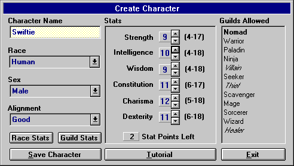

Creating a Character

On the right side of the Create Character Window is a section that shows you what Guilds the character is currently capable of joining (with the selected Race). Bold represent guilds your character can join given the selected stats, race and alignment. Guilds that are not in Bold represent those guilds which your selected race and alignment can join, but not with your current stats. Guilds that are in Italic represent those guilds that your selected race can join, but not with your selected alignment (either Good, Neutral or Evil).
This window is only for creation purposes. With some guilds, a starting character just can't select the stats to join (the requirements for stats are too high) - the way to join these guilds is to create the character, run around as a Nomad (or another guild) until you find enough items to raise your stats to the minimum requirements of the guild.
Once you've chosen your Name, Race, Alignment, Sex and Stats, you can then save your character and start playing.
Passwords
Even though the game will prompt you for a password when you create a character, if you do not wish one, simply press ENTER twice. This will allow you (or anybody else on the computer) to run the character without requiring a password. If you change your mind later, you can always change your character's password! Also remember that passwords in Mordor are case sensitive! If you do enter a password for you character, be sure you remember it or write it down somewhere.
If you wish, you can click on the "Tutorial" button for a basic walk-through on creating a character, buying items, and encountering your first monster(s). For beginners, this is recommended.
Move to the next section to read about the Game Screen.
Move to the previous section to read about Races.
M1: "The Depths of Dejenol" is a Trademark of Decklin's Domain Ltd and is © Copyright 1994-2026 All Rights Reserved